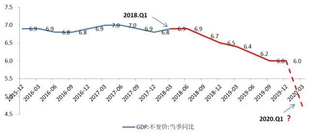

2020无春招
原文链接 备份链接 《创新经济战疫计划》，是燃财经在新型肺炎疫情期间推出的特别栏目，关注创新经济企业遇到的新难题、商讨应该采取的新对策，希望能够帮助中小企业一起战胜挑战、把握机会。 作者 | 苏琦 编辑 | 魏佳 “金三银四”的春招季，如 …

疫情行至中盘，当下的事情尚存不确定，不宜为一个翻番指标，上新的紧箍咒

张岸元 | 文
当前形势下，提出努力完成今年经济社会发展目标任务，对于稳定预期，鼓足干劲，具有重要意义。努力完成任务，首先要明确任务；明确任务，首先要对灾疫既有经济损失有充分估计。一段时期以来，经济界纷纷强调疫情对中国经济社会发展构成严重冲击。但这一冲击从短期定量看，究竟严重到什么程度；从中长期定性看，究竟有无结构性趋势性影响，尚缺少说服力的阐述。
此前，个别流行病学家轻言“可防可控”，对疫情的严重性讳莫如深、顾左右而言他。而今，一些搞经济工作的人士，判断一季度能有4%、5%正增长；断言“中长期不改向好态势”。这些拍脑袋的表态如果成为决策基础，造成的危害不亚于此前对疫情的误判。
一、要考虑一季度经济可能萎缩的场景
关于一季度增长的定量预测，确实存在很大难度，需要随疫情演进不断调整。但既然是预测，就不能犯方向性错误，不能有量级的偏差。如果说半个月之前，预测一季度能有3%到5%的增长，尚值得商榷的话，时至今日，还维持该判断，则是谬以千里。
GDP的统计方法、统计口径固然复杂，但其本质是居民一段时期内经济活动创造财富总量的测度。回归常识：一个季度三个月，其中十几亿人口待在家里近一个月，经济居然还实现若干正增长，怎有可能？
假定一月份、三月份都能一切如常，且实现6%的增长，那么，二月份工作量最多萎缩12%（两个6%），三个月加总才正好实现零增长。从目前披露的开工率、电厂耗煤、发送旅客、集装箱吞吐、城市拥堵指数、乘用车销售等一系列高频数据看，二月份工作量萎缩程度显然超过这一水平。
市场预测出现如此大偏差的原因是多方面的。首先，多年来，我们习惯了正增长，一些研究者并不清楚国民经济核算，容易将二月份经济规模的绝对萎缩，误解为增速下行，没有从一月、三月的正增长中减除萎缩的工作量。其次，宣传的力量不能移山，却能使人看不到有山在移。我们更愿意传播正能量，更愿意被疫情期间个别需求逆向繁荣的树叶障住眼睛。最后，此前经济数据的瑕疵，让我们轻视了统计工作的严肃性。我相信官方统计不会因为疫情改变口径，更不可能对核算数据做量级上的调整。
高估一季度经济正增长的政策后果，就是刻舟求剑，指望通过随后几个季度的逆向政策刺激，将全年增速锁定在实现翻番所需的某个水平上。这太难了。简单估算，一季度若没有经济增长，随后三个季度的当季增速必须达到7%，全年平均下来经济增速才可能超过5%。中国经济季度增速最近一次达到7%，还是2017年二、三季度的事。在经济总量扩大、下行趋势不改情况下，要想通过逆向调节达到7%增速，所需的政策力度必然超出一般刺激政策边界，必然以更显著的结构恶化、更大规模的潜力透支为代价。
疫情冲击之下，目标任务一切如常，反而反常。去年底中央经济工作会议议定的事项，不涵盖疫情因素。全国两会尚未召开，经济和社会发展目标尚未通过法定程序确认公布。届时进一步强调小康社会的民生保障、社会建设含义；根据一季度经济损失的严重程度，调整增速目标并淡化之，人民能够理解、能够接受。目标切合实际，任务自然完成。
二、要考虑中长期趋势的变化
疫情不改变中国经济中长期向好态势的判断，是个愿景。需要问两个问题：一是原有中长期趋势是否是向好，二是这一趋势是否会改变，是否需要改变。
——百年未有之大变局客观存在。此时此刻，各方都在评估中国社会治理的真实状况，都在考察这个国家的应对策略应急管理能力，事后可能会在对华政策方面有所反应。至于方向是什么，不完全取决于我们，也不完全取决于对方。疫情爆发前中美第一阶段贸易协议的达成，为防控应对提供了和缓的外部环境，避免了内外共振局面的出现。下一步疫后恢复期间，缓和态势需要延续。
——经济加速下行态势需要逆转。由中长期变量趋势性变化决定的潜在增长率下行态势，不会因疫情冲击恶化，当然，也不会因之好转。我们尤其需要关注近年来，中国经济领域出现的新变化。
图：2018年以来，季度同比增速加速下行

制图：中信建投证券研究发展部
2018年以来（上图红线部分），中国经济在原有中长期增速缓慢下行基础上，又叠加了一个新的加速下行态势。背后的原因，显然要从制度层面、政策层面去找。坦率说，改开以来推动中国经济快速增长的微观激励制度基础，有的被暂时搁置。与此同时，新的激励约束机制尚没有建立。疫情后，如果不改，中国经济可能下滑到更低的增速平台。
习主席说，中华民族伟大复兴绝不是轻轻松松、敲锣打鼓就能实现的。此次灾疫、特别是采取的强力管控措施史无前例，对短期经济的影响数十年未有。其后续影响超出现有分析框架。疫情行至中盘，当下的事情尚存不确定，不宜为一个翻番指标上新的紧箍咒。至于疫后，大到国家、小到家庭，首先都需要休养生息。如何总结反思此次灾疫是宏大命题。确定的是，体制内外，社会各阶层，不可能一切照旧。不确定的是，基于同样的事实，将得出怎样的结论，引申出怎样方向可能截然相反的路线。
我相信历史的车轮滚滚向前，相信五星出东方利中国。
作者为中信建投证券首席经济学家 编辑：苏琦

▲点击图片查看更多疫情报道
责编 | 黄端 duanhuang@caijing.com.cn
本文为《财经》杂志原创文章，未经授权不得转载或建立镜像。如需转载，请在文末留言申请并获取授权。
原文链接 备份链接 《创新经济战疫计划》，是燃财经在新型肺炎疫情期间推出的特别栏目，关注创新经济企业遇到的新难题、商讨应该采取的新对策，希望能够帮助中小企业一起战胜挑战、把握机会。 作者 | 苏琦 编辑 | 魏佳 “金三银四”的春招季，如 …
原文链接 备份链接 顶住开市压力，A股在大跌后逐渐修复，沪指重回3000点，创业板创下新高。未来中国的经济增长靠什么？不是靠短期的货币政策、财政政策，而是消费升级与产业升级，A股已然掀起科技热潮 文 |《财经》 …
原文链接 备份链接 经历整整31天的艰难考验之后，武汉疫情防控已经从无序走向有序，但千万居民的生活从无序到有序才刚刚开始，这个疫情核心区的社会经济生活全面恢复，还面临很多挑战 2020年2月11日，武汉市洪山体育馆武昌方舱医院，社区工作人 …
原文链接 备份链接 很多时候，流调人员不像医生，患者会主动尽可能多地给医生提供有用信息。流调人员说，希望市民在经历过疫情之后，能够了解到流调的重要性，为他们将来的工作提供更多便利。 记者 | 应 琛 当大家对新冠肺炎“零号病人”议论纷纷之 …
原文链接 备份链接 燃财经（ID:rancaijing）原创 作者 | 孟亚娜 编辑 | 凌远川 坐电梯像“吃火锅”，吃饭像“参加高考”，红外线测体温，脚踏式按键开门神器……近日，互联网公司的花式复工火了，网友大呼，太硬核了。 图片来源 …